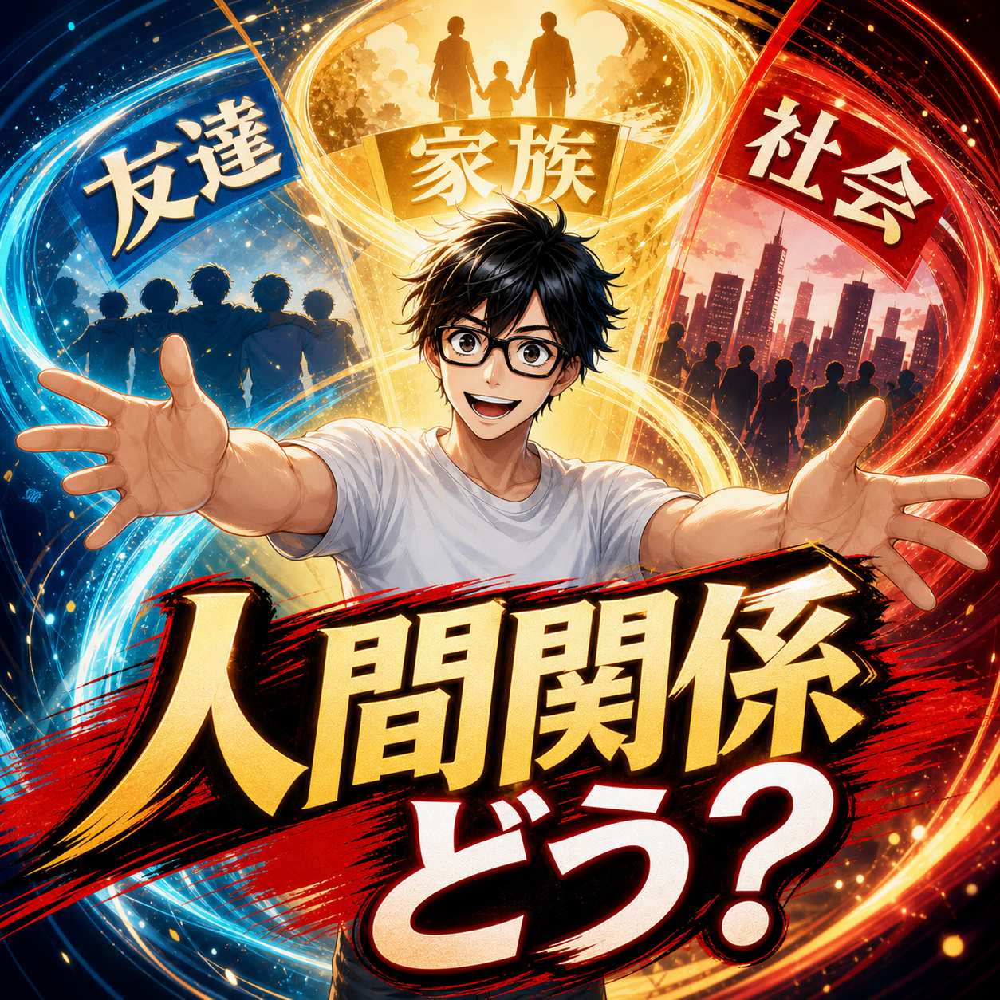

FIRE COLUMN
FIRE後の人間関係はどう変わる？友達・家族・社会との距離感

.png) RELATED ARTICLE
20人以上が続けてくれたFIREコミュニティで、運営して分かったこと
オンラインコミュニティを始めた直後、無料募集に数日で約150人が集まりました。数字だけ見れば大成功です。しかし、運営してみると、参加人数が多いことと、安心して話せる場所であることは別だと分かりました。
wakuwaku-fire-git.pages.dev ↗
RELATED ARTICLE
20人以上が続けてくれたFIREコミュニティで、運営して分かったこと
オンラインコミュニティを始めた直後、無料募集に数日で約150人が集まりました。数字だけ見れば大成功です。しかし、運営してみると、参加人数が多いことと、安心して話せる場所であることは別だと分かりました。
wakuwaku-fire-git.pages.dev ↗
 COMMUNITY
FIREを本音で話せる場所
ワクワクFIRE道。FIREや自由な人生を目指す人が交流できるコミュニティ。
community.camp-fire.jp ↗
COMMUNITY
FIREを本音で話せる場所
ワクワクFIRE道。FIREや自由な人生を目指す人が交流できるコミュニティ。
community.camp-fire.jp ↗
FIRE後の人間関係は、友達・家族・社会との距離がどう変わるのか。会社がなくなった後の会話や役割、家事育児とコミュニティを通じた関係の作り直しを考えます。
まいど！ワクワクFIREのまるです。
会社を辞めたら、人間関係はどうなるんやろ。
FIREを考える時、資産額や生活費の話はよく出ます。でも、退職した翌日から変わるのは家計だけではありません。誰と話すのか、どこに所属するのか、家族とどんな時間を過ごすのか。人間関係の設計も、自分でやることになります。
僕はFIRE後、人と会う機会が減り、会話力が落ちたと感じた時期がありました。一方で、家族との時間やコミュニティでの交流を通じて、会社とは違う関係も作ってきた。全部が良くなったわけでも、全部が悪くなったわけでもないです。
会社を辞めると、自然に続く関係が減る
会社には、気の合う人だけが集まっているわけではありません。それでも毎日顔を合わせる人がいて、仕事の話や雑談がある。退職すると、この「自然に続く」仕組みがなくなります。
友達と会いたいと思っても、相手は平日に働いている。こちらの昼間の自由と、相手の忙しさが合わないこともある。連絡しないまま時間が過ぎれば、仲が悪くなくても距離は開いていきます。
関係が薄くなったことを、相手のせいにしない。生活の時間帯が変わっただけかもしれない。そう考えると、必要以上に落ち込まず、こちらから新しい会い方を探せます。
友達とは、同じ時間を過ごすだけでなく近況を渡す
FIRE後は、友達との会話に仕事の共通話題がなくなることがあります。最初は何を話せばいいか分からない。自分の毎日が暇に見えるのではないかと、変な見栄も出る。
でも、家事をした、散歩をした、子どもと出かけた、文章を書いた。そんな普通の話でいい。FIREしたからといって、毎日が冒険である必要はありません。
僕も発信やコミュニティで、自分の失敗や迷いを言葉にしてきました。立派な成果だけを話すより、何に困っているかを共有したほうが、会話は続く。恥ずかしがらず自己開示していくと、関係の温度が上がることがあります。
家族との距離は、近いからこそ話し合いが必要
家族と過ごす時間が増えるのは、FIREの大きな価値です。僕は妻が働き、自分が子どもの送迎や家事育児を担う生活を公開しています。会社へ行く時間がないからこそ、朝食や子どもの成長へ立ち会える。
ただ、家族がいるから何でも自然にうまくいくわけではありません。お金の不安、家事の分担、自由時間の取り方。生活が近いほど、言わなくても分かるやろという期待がすれ違いを生む。
資産の値動きや働き方を、自分一人の計画として進めない。妻や家族がどんな不安を感じるかを勝手に決めず、話せる範囲で話す。資産運用の正しさより、家庭が安心して続くことを優先する場面もあります。
家族だけに人間関係を集中させない
家族が大切でも、家族だけに会話や承認を集中させると、双方が疲れます。夫婦には夫婦の時間、親子には親子の時間、友人には友人の時間がある。
僕はコミュニティを作り、FIREや自由な生き方を話せる場所を育てました。家族には話しにくい資産の迷いを共有できる人がいると、家庭へ持ち帰る重さが減ることがあります。
人間関係は、一本の太い柱だけで支えるより、複数の細い柱があるほうが折れにくい。家族、友人、趣味、地域、オンライン。自分に合う組み合わせでいいです。
相手との温度差を、敵にしない
FIREした側は、平日の昼でも連絡できるし、会いたいと思ったらすぐ動けます。でも、働いている友人や家族には、同じ余白があるとは限りません。こちらの自由を相手へ押しつけると、善意が負担に変わることがあります。
返事が遅い、予定が合わない、前ほど話せない。そんな変化があっても、関係が終わったと決めつけない。相手の生活の速度を尊重しながら、会えるときに濃く話す。FIRE後の人間関係には、このゆるさがけっこう必要です。
自分の時間が増えたからこそ、相手の時間も大切にする。ほんまに、自由になった人ほど気をつけたいところやなと思います。
社会との距離は、働いているかどうかだけで決まらない
仕事をしていないと社会から外れたように感じる人もいます。僕もFIRE初期に、何者でもない焦りを感じました。けど、社会との接点は会社だけではありません。
文章や動画で経験を共有する。コミュニティを運営する。家事育児で家庭を支える。誰かの相談を聞く。必要なら配達のような実際の労働を試す。収入になる活動もあれば、ならない活動もありますが、役割として社会とつながることはできる。
自分が何をしている人かを、会社の肩書きだけで決めない。自分の腹から出た言葉で定義し直す。FIRE後は、その作業も仕事の一部かもしれません。
関係を守るには、定期的な小さな約束が効く
人間関係を大切にしようと思っても、気持ちだけでは続きません。月に一度連絡する、週に一回通話する、子どもと一緒に会える場所を選ぶ。予定へ入れてしまうのが一番確実です。
相手の生活を尊重し、返信の速さや会う回数を愛情の物差しにしないことも大事です。忙しい時期はある。こちらが自由だからといって、相手まで同じ時間を持っているわけではないんよな。
FIRE後の人間関係は、減るだけではない
会社を辞めると、自然に続く関係はいくつか減ります。でも、その分、自分が選んだ関係を育てる余白ができます。家族との日常、昔からの友人、コミュニティ、新しい活動。関係の数より、どんな距離で話せるかが大切です。
FIREは人付き合いから完全に自由になる制度ではありません。誰と、どれくらい、何を共有したいのかを自分で選ぶ生き方です。離れたい関係から距離を置き、残したい関係へ時間を使う。
その選択を繰り返していけば、会社を辞めた後にも、自分なりの社会ができてくる。ほんまに、自由は一人で完成させるものやないんやと思います。